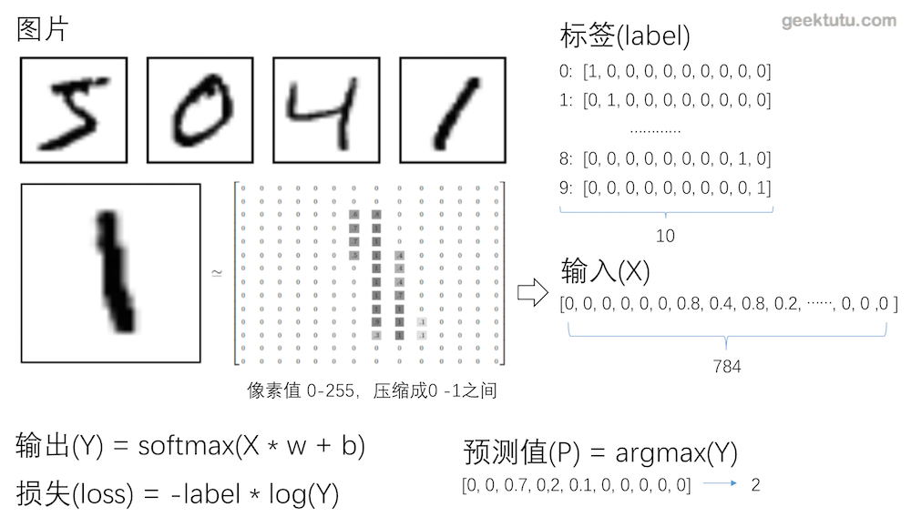

TensorFlow入门(一) - mnist手写数字识别(网络搭建)
源代码/数据集已上传到
Github - tensorflow-tutorial-samples
这篇文章是 TensorFlow Tutorial 入门教程的第一篇文章。主要介绍了如何从0开始用tensorflow搭建最简单的网络进行训练。
mnist数据集
简介
MNIST是一个入门级的计算机视觉数据集，它包含各种手写数字图片。在机器学习中的地位相当于Python入门的打印Hello World。官网是THE MNIST DATABASE of handwritten digits
该数据集包含以下四个部分
- train-images-idx3-ubyte.gz: 训练集-图片，6w
- train-labels-idx1-ubyte.gz: 训练集-标签，6w
- t10k-images-idx3-ubyte.gz: 测试集-图片，1w
- t10k-labels-idx1-ubyte.gz: 测试集-标签，1w
图片和标签
mnist数据集里的每张图片大小为28 * 28像素，可以用28 * 28的大小的数组来表示一张图片。
标签用大小为10的数组来表示，这种编码我们称之为One hot（独热编码）。
One-hot编码（独热编码）
独热编码使用N位代表N种状态，任意时候只有其中一位有效。
采用独热编码的例子
1
2
3
4
5
| 性别:
[0, 1]代表女，[1, 0]代表男
数字0-9:
[0,0,0,0,0,0,0,0,0,1]代表9，[0,1,0,0,0,0,0,0,0,0]代表1
|
独热编码的优点在于
- 能够处理非连续型数值特征
- 在一定程度上也扩充了特征。比如性别本身是一个特征，经过编码以后，就变成了男或女两个特征。
在神经网络中，独热编码其实具有很强的容错性，比如神经网络的输出结果是 [0,0.1,0.2,0.7,0,0,0,0,0, 0]转成独热编码后，表示数字3。即值最大的地方变为1，其余均为0。[0,0.1,0.4,0.5,0,0,0,0,0, 0]也能表示数字3。
numpy中有一个函数，numpy.argmax()可以取得最大值的下标。
神经网络的重要概念
输入（x）输出（y）、标签（label）
- 输入是指传入给网络处理的向量，相当于数学函数中的变量。
- 输出是指网络处理后返回的结果，相当于数据函数中的函数值。
- 标签是指我们期望网络返回的结果。
对于识别mnist图片而言，输入是大小为784（28 * 28）的向量，输出是大小为10的概率向量（概率最大的位置，即预测的数字）。
损失函数（loss function）
损失函数评估网络模型的好坏，值越大，表示模型越差，值越小，表示模型越好。因为传入大量的训练集训练的目标，就是将损失函数的值降到最小。
常见的损失函数定义：
1
2
3
| [0, 0, 1] 与 [0.1, 0.3, 0.6]的差的平方和为 0.01 + 0.09 + 0.16 = 0.26
[0, 0, 1] 与 [0.2, 0.2, 0.6]的差的平方和为 0.04 + 0.04 + 0.16 = 0.24
[0, 0, 1] 与 [0.1, 0, 0.9]的差的平方和为 0.01 + 0.01 = 0.02
|
1
2
3
4
|
[0, 0, 1] 与 [0.1, 0.3, 0.6]的交叉熵为 -log(0.6) = 0.51
[0, 0, 1] 与 [0.2, 0.2, 0.6]的交叉熵为 -log(0.6) = 0.51
[0, 0, 1] 与 [0.1, 0, 0.9]的交叉熵为 -log(0.9) = 0.10
|
当label为0时，交叉熵为0，label为1时，交叉熵为-log(y)，交叉熵只关注独热编码中有效位的损失。这样屏蔽了无效位值的变化（无效位的值的变化并不会影响最终结果），并且通过取对数放大了有效位的损失。当有效位的值趋近于0时，交叉熵趋近于正无穷大。

回归模型
我们可以将网络理解为一个函数，回归模型，其实是希望对这个函数进行拟合。
比如定义模型为 Y = X * w + b，对应的损失即
1
2
3
| loss = (Y - labal)^2
= -(X * w - b - label)^2
这里损失函数用方差计算，这个函数是关于w和b的二次函数，所以神经网络训练的目的是找到w和b，使得loss最小。
|
可以通过不断地传入X和label的值，来修正w和b，使得最终得到的Y与label的loss最小。这个训练的过程，可以采用梯度下降的方法。通过梯度下降，找到最快的方向，调整w和b值，使得w * X + b的值越来越接近label。
梯度下降的具体过程，就不在这篇文章中展开了。

学习速率
简单说，梯度即一个函数的斜率，找到函数的斜率，其实就知道了w和b的值往哪个方向调整，能够让函数值（loss）降低得最快。那么方向知道了，往这个方向调整多少呢？这个数，神经网络中称之为学习速率。学习速率调得太低，训练速度会很慢，学习速率调得过高，每次迭代波动会很大。
softmax激活函数
本文不展开讲解softmax激活函数。事实上，再计算交叉熵前的Y值是经过softmax后的，经过softmax后的Y，并不影响Y向量的每个位置的值之间的大小关系。大致有2个作用，一是放大效果，二是梯度下降时需要一个可导的函数。
1
2
3
4
5
6
| def softmax(x):
import numpy as np
return np.exp(x) / np.sum(np.exp(x), axis=0)
softmax([4, 5, 10])
|
Tensorflow识别手写数字
构造网络 model.py
1
2
3
4
5
6
7
8
9
10
11
12
13
14
15
16
17
18
19
20
21
22
23
24
25
26
27
28
29
30
31
32
33
34
35
36
37
38
| import tensorflow as tf
class Network:
def __init__(self):
self.learning_rate = 0.001
self.x = tf.placeholder(tf.float32, [None, 784])
self.label = tf.placeholder(tf.float32, [None, 10])
self.w = tf.Variable(tf.zeros([784, 10]))
self.b = tf.Variable(tf.zeros([10]))
self.y = tf.nn.softmax(tf.matmul(self.x, self.w) + self.b)
self.loss = -tf.reduce_sum(self.label * tf.log(self.y + 1e-10))
self.train = tf.train.GradientDescentOptimizer(self.learning_rate).minimize(self.loss)
predict = tf.equal(tf.argmax(self.label, 1), tf.argmax(self.y, 1))
self.accuracy = tf.reduce_mean(tf.cast(predict, "float"))
|
训练 train.py
1
2
3
4
5
6
7
8
9
10
11
12
13
14
15
16
17
18
19
20
21
22
23
24
25
26
27
28
29
30
31
32
33
34
35
36
37
38
39
40
41
42
43
44
45
46
47
| import tensorflow as tf
from tensorflow.examples.tutorials.mnist import input_data
from model import Network
class Train:
def __init__(self):
self.net = Network()
self.sess = tf.Session()
self.sess.run(tf.global_variables_initializer())
self.data = input_data.read_data_sets('../data_set', one_hot=True)
def train(self):
batch_size = 64
train_step = 2000
for i in range(train_step):
x, label = self.data.train.next_batch(batch_size)
_, loss = self.sess.run([self.net.train, self.net.loss],
feed_dict={self.net.x: x, self.net.label: label})
if (i + 1) % 10 == 0:
print('第%5d步，当前loss：%.2f' % (i + 1, loss))
|
验证准确率 train.py
1
2
3
4
5
6
7
8
9
10
11
12
13
14
15
16
| class Train:
def __init__(self):
...
def train(self):
...
def calculate_accuracy(self):
test_x = self.data.test.images
test_label = self.data.test.labels
accuracy = self.sess.run(self.net.accuracy,
feed_dict={self.net.x: test_x, self.net.label: test_label})
print("准确率: %.2f，共测试了%d张图片 " % (accuracy, len(test_label)))
|
主函数 train.py
1
2
3
4
5
6
7
8
9
10
11
12
13
14
15
16
17
18
| if __name__ == "__main__":
app = Train()
app.train()
app.calculate_accuracy()
|
项目已更新在Github，数据集由于国内网络等因素，有时候不能正确下载，所以数据集也一并同步了。
觉得还不错，不要吝惜你的star，支持是持续不断更新的动力。
附 推荐
上一篇 « 留言板
下一篇 » TensorFlow入门(二) - mnist手写数字识别(模型保存加载)